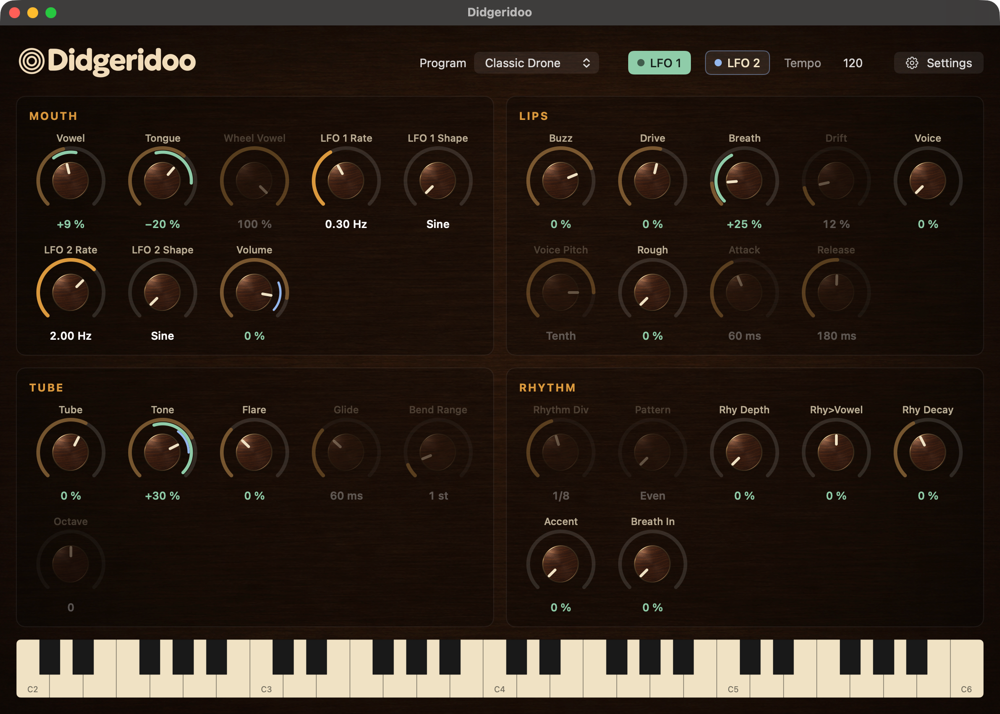
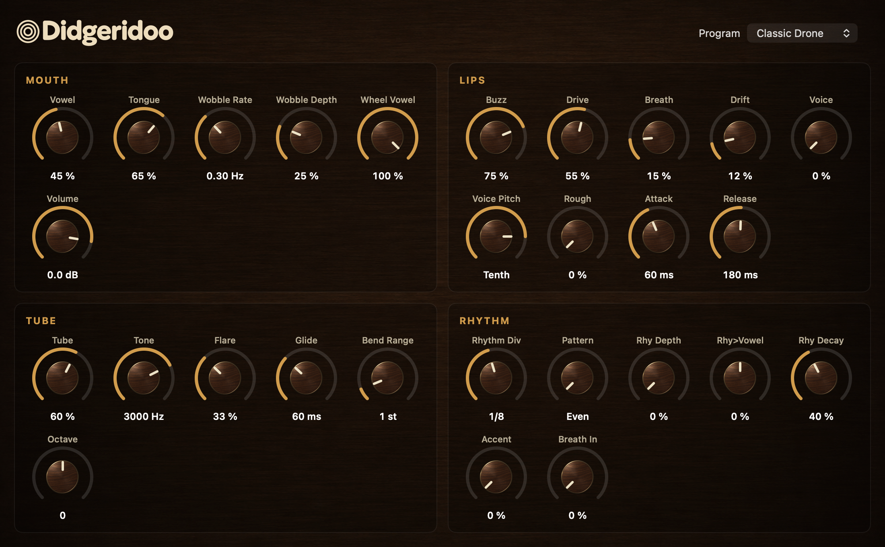

Getting started
- Download the disk image from the download page and open it.
- Drag Didgeridoo to Applications and start it from there.
- Play a low note on a MIDI keyboard, or click the keyboard at the bottom of the window. The app listens to every connected MIDI device until you choose one in Settings.
- To use the instrument in a host such as Ableton Live or Logic Pro, open Settings and click Install Audio Unit (see The Audio Unit plug-in).
The main window

- 1Name
- The instrument's name.
- 2Program, LFO 1 and LFO 2, MIDI, Tempo, Settings
- Program loads one of the ten built-in sounds. It overwrites every knob except Octave and cuts off a sounding note; your own changes are not kept in the program. All ten play the same model of the instrument, built on measurements of real ones; they differ in the tube, the mouth and the way of playing. LFO 1 and LFO 2 turn the knobs into the amounts by which that LFO moves them (see LFOs). MIDI shows the MIDI controller of every knob and lets a knob learn another (see MIDI controllers). Tempo (20–300 BPM) sets the speed of the rhythm pulse. Settings opens MIDI input, audio output and the Audio Unit installer.
- 3Mouth
- The shape of the mouth: where the tongue stands and what it takes away from the drone. The knobs of the two LFOs are here too. See Mouth.
- 4Lips
- The source of the sound: lips, breath, voice and how notes begin and end. See Lips.
- 5Tube
- The instrument itself: its resonances and its shape, glide, the pitch bend range and the octave. See Tube.
- 6Rhythm
- The tempo-synced pulse with its accents and in-breaths. See Rhythm.
- 7Keyboard
- Click a key to play it. Near the top of a key the hit is soft, further down it is firmer, and the bottom of a key is the hardest hit.
Turning a knob
Drag a knob up or down. Hold Shift while dragging for fine steps. Double-click a knob to return it to the value of the current program. The app remembers the knobs, the program and the tempo between launches.
Playing
Didgeridoo plays one note at a time. Hold a key for the drone; a second key slides the pitch there (Glide), and releasing it falls back to the key still held. With Octave at 0 the range of a real instrument sits around middle C: C3–G3 (MIDI notes 60–67).
- Velocity
- A harder hit is a louder note. The instrument has no overblown note: the hardest hit is a loud drone.
- Mod wheel
- Raises the tongue: moves Vowel up by as much as Wheel Vowel allows.
- Aftertouch
- Adds the sung voice on top of the Voice knob.
- Pitch bend
- Bends the pitch by up to Bend Range semitones.
- Sustain pedal
- Holds the drone after you release the keys.
Mouth
- Vowel (0–100 %)
- The mouth shape, from an open “aw” at 0, where the tongue lies low and the drone is plain, to a tight “ee” at 100. As it rises the tongue rises with it, and the bright band the tongue leaves in the sound climbs from about 1 to 2.2 kHz.
- Tongue (0–100 %)
- How deep the mouth cuts into the sound. A player's mouth adds nothing: with the tongue raised it holds the sound back at three resonances of its own, and the band left between them is the bright overtone you hear moving. At 0 the mouth does nothing, wherever Vowel stands. Below about 25 % of Vowel the tongue lies low and nothing happens either; from 80 % it works in full. A raised tongue also lifts the drone by up to a third of a semitone.
- Wheel Vowel (0–100 %)
- How far the mod wheel moves the vowel.
- LFO 1 Rate (0.02–20 Hz)
- How often LFO 1 goes round. What it moves, and how far, is set on the knobs themselves: see LFOs.
- LFO 1 Shape (Sine, Triangle, Ramp Up, Ramp Down, Square, Steps, Wander)
- The shape of its cycle. Sine and Triangle sway; the ramps rise or fall and jump back; Square switches between two places; Steps takes a new random place every cycle and holds it; Wander takes one and moves there smoothly.
- LFO 2 Rate, LFO 2 Shape
- The same for LFO 2.
- Volume (−40 to +6 dB)
- Output level. The programs are balanced for 0 dB.
Lips
- Buzz (0–100 %)
- How hard the lips close. They are shut for a good half of every cycle: a hard closure (100) gives a bright, buzzing drone, a soft one (0) a mellow drone with few high harmonics.
- Drive (0–100 %)
- How hard the lips are blown. The air that passes them cannot grow beyond what the blowing pressure allows, so a wide opening flattens each puff: more Drive gives a fuller, rougher tone with stronger harmonics. It works on the lips themselves, before the mouth and the tube shape the sound.
- Breath (0–100 %)
- Breath noise. It passes only while the lips are open, so it comes in bursts at the pitch of the drone, and the mouth and the tube colour it as they colour the drone.
- Drift (0–100 %)
- Slow, random wandering of the pitch, up to about a third of a semitone. A real drone is steady: keep it low for a faithful sound.
- Voice (0–100 %)
- Singing into the tube the way players do it: the voice opens and closes the same stream of air as the lips, at the interval of Voice Pitch above the drone. A fifth or a tenth adds a tone one octave below the drone. Aftertouch adds to it.
- Voice Pitch (Unison, Third, Fourth, Fifth, Octave, Tenth, Twelfth)
- The interval of the sung voice above the drone. These are the intervals at which a voice locks to the drone and stands still; players sing the tenth most.
- Rough (0–100 %)
- Pulls the voice off its lock, by up to a third of a semitone, so that it beats against the drone: a growl.
- Attack (5–2000 ms)
- How quickly a note fades in.
- Release (10–3000 ms)
- How quickly it fades out after the key is released.
Tube
- Tube (0–100 %)
- The resonances of the instrument itself. The lowest lies just under the drone and makes the fundamental stand far above its harmonics, as on a real didgeridoo; the others stand where Flare puts them. The loudness stays about the same. At 0 the tube is left out.
- Tone (200–8000 Hz)
- Up to this frequency the tube sends out higher harmonics more strongly than lower ones; above it no more. Lower is darker.
- Flare (0–100 %)
- The shape of the tube. At 0 it is a plain pipe, which favours the odd harmonics of the drone and sounds hollow; higher values are natural instruments that widen towards the end, whose harmonics above the fundamental are weak.
- Glide (0–1000 ms)
- How long the pitch takes to slide from one note to the next.
- Bend Range (0–12 st)
- The pitch bend range in semitones. A player's lips move the drone by about a semitone in all.
- Octave (−2 to +2)
- Moves the whole instrument by octaves. At 0 a key sounds two octaves below its MIDI note, which puts a didgeridoo's range around middle C. +2 plays the MIDI note itself, for pads and keyboards that start low. A sounding note slides to the new octave. Programs leave this knob where you put it.
Rhythm
The pulse starts at full strength on every step and fades until the next one. With Rhy Depth, Rhy>Vowel, Accent and Breath In at zero it does nothing. In the app it runs at the Tempo in the header; in a host it follows the song.
- Rhythm Div (1/64 to 2/1)
- The length of one step, including triplet (T) and dotted (D) values.
- Pattern (Even, A-b, A-b-b, A-b-b-A-b-A)
- Which steps are accents (A) and which are soft (b). On a soft step Rhy>Vowel pushes the vowel the other way, as the tongue swings back after an accent. Even treats every step alike.
- Rhy Depth (0–100 %)
- How far the volume drops between pulses.
- Rhy>Vowel (−100 to +100 %)
- How far each pulse pushes Vowel: positive raises the tongue, negative lowers it.
- Rhy Decay (0–100 %)
- The shape of the pulse, from a long swell at 0 to a short stab at 100.
- Accent (0–100 %)
- How much louder an accented step begins, with lips that close harder for a moment, and how much quieter the soft steps are.
- Breath In (0–100 %)
- A quick breath through the nose on every soft step, as in circular breathing: for the first fifth of a second the drone drops, the breath is heard and the tongue lets go. It needs a pattern with soft steps.
LFOs
Two LFOs can move the knobs for you. Each goes round at its own rate in its own shape (their four knobs are in Mouth), and every knob that can be moved has an amount for each LFO: how far that LFO swings it either way, as a part of the knob's travel. An LFO does not turn the knob; it adds to where the knob stands.

- Setting an amount
- Click LFO 1 or LFO 2 in the header. The knobs now show that LFO's amounts, in its colour: drag a knob up for a positive amount, down for a negative one, which turns the movement round. An arc inside the knob's ring shows the part of its travel the LFO sweeps. Double-click a knob to put its amount back to the program's. Click the button again to get the knobs back.
- What can be moved
- Vowel, Tongue, Volume, Buzz, Drive, Breath, Voice, Rough, Tube, Tone, Flare, Rhy Depth, Rhy>Vowel, Rhy Decay, Accent and Breath In. The switches, the times and a few others step back while a button is on; the LFOs' own knobs stay in use. Both LFOs can move the same knob: their movements add up and stop at the ends of the knob's travel.
- Seeing it
- With both buttons off, a knob that an LFO moves keeps its arc, sage green for LFO 1 and pale blue for LFO 2, so you see at a glance what is moving. The knob's pointer stays where you put it.
- As it comes
- In most programs LFO 1 sways Vowel a little: the slow movement of the mouth. The LFOs run on their own and a new note does not start them again. The amounts are stored with the sound, and in a host each one is a parameter of its own (“LFO 1>Vowel”) that can be automated.
MIDI controllers
Every knob listens to a MIDI controller (a control change, CC): move the control and the knob goes where it says, from the bottom of its travel at 0 to the top at 127 (Rhy>Vowel, which has a middle, stands on it at 64). The knobs come with the controllers listed below, and any knob can learn another.

- Teaching a knob
- Click MIDI in the header: under every knob is its controller. Click a knob, and a dashed ring shows that it is listening; now move a control on your MIDI controller. The knob takes that control and goes where it stands. A controller moves one knob only, so a knob that had it before is left with none (“—”). Click the listening knob again to call it off, and MIDI again to get the knobs back.
- Putting it back
- Double-click a knob to give it back the controller it came with. A secondary click on a knob offers the same and No controller. Defaults, next to the MIDI button while it is on, does it for every knob.
- Mouth
- Vowel 11, Tongue 71, Wheel Vowel 20, LFO 1 Rate 76, LFO 1 Shape 21, LFO 2 Rate 22, LFO 2 Shape 23, Volume 7
- Lips
- Buzz 70, Drive 2, Breath 24, Drift 25, Voice 26, Voice Pitch 27, Rough 28, Attack 73, Release 72
- Tube
- Tube 29, Tone 74, Flare 30, Glide 5, Bend Range 31, Octave 103
- Rhythm
- Rhythm Div 85, Pattern 86, Rhy Depth 87, Rhy>Vowel 88, Rhy Decay 89, Accent 90, Breath In 102
- Not for knobs
- The mod wheel (CC 1) and the sustain pedal (CC 64) keep their own work (see Playing), and so do the controllers MIDI keeps for itself: 0, 6, 32, 38, 96–101 and 120–127. A knob does not learn them. The amounts of the LFOs have no controllers.
- Where it is kept
- The app remembers the controllers between launches. They do not belong to a program: loading one leaves them alone. A knob jumps to its controller's place the moment the control is moved.
- OXI E16
- For the OXI E16 controller there is an instrument definition with these controllers: Didgeridoo.oxiindef. Import it in the OXI App. It names every knob and carries the controller value of each knob's default place; the mod wheel and the sustain pedal are in it too. Leave its ranges at 0 to 127, switches included: the instrument spreads a knob's whole travel over them.
Settings
- MIDI input › Device
- All devices (the default), None, or one connected keyboard or controller. A chosen device that is unplugged stays in the list as “not connected”; the app listens to it again as soon as it is back.
- MIDI input › Channel
- All channels or one of 1–16; messages on other channels are ignored.
- The “Didgeridoo” MIDI port
- While the app runs, other applications can send MIDI to a port called Didgeridoo. It is always on and obeys the channel setting.
- Audio output › Device
- System default or a specific audio device. System default follows the output chosen in macOS, also when it changes while the app runs (when you plug in headphones, for example). A chosen device that is unplugged stays in the list as “not connected”: the sound goes to the system default until the device is back.
- Audio output › Channels
- Shown for a chosen device with four or more outputs: the pair of channels the sound goes to. A newly chosen device starts on its first pair. The instrument is mono; both channels carry the same signal.
- Audio Unit plug-in
- Shows whether the plug-in is installed and in which version; Install Audio Unit installs or updates it.
The Audio Unit plug-in
- In the app, open Settings and click Install Audio Unit. This copies Didgeridoo.component into ~/Library/Audio/Plug-Ins/Components.
- Restart your host or let it rescan its plug-ins. In Ableton Live, Audio Units must be switched on in Settings › Plug-Ins.
- The instrument appears as Didgeridoo by Jiri Pisa among the Audio Unit instruments.

The plug-in has the same sound, the same knobs and LFOs and the same ten programs (as factory presets) as the app. Its window is the app's panel: the Program menu, the LFO and MIDI buttons and the knobs of Mouth, Lips, Tube and Rhythm. The tempo, the MIDI and audio settings and a keyboard are the host's own, so the window leaves them out. The knobs follow the host's automation, and turning one can be recorded as automation. The plug-in also answers the MIDI controllers the host passes on to it, with the same MIDI button to teach the knobs; the host saves which controller moves which knob with the project. The host saves the sound with the project. The rhythm pulse follows the host's tempo and song position.
After updating the app, click Install Audio Unit again to update the plug-in.
Updates
At every launch Didgeridoo asks whether a newer version exists and, if so, offers it; nothing is installed without your OK. Didgeridoo › Check for Updates… asks right away.